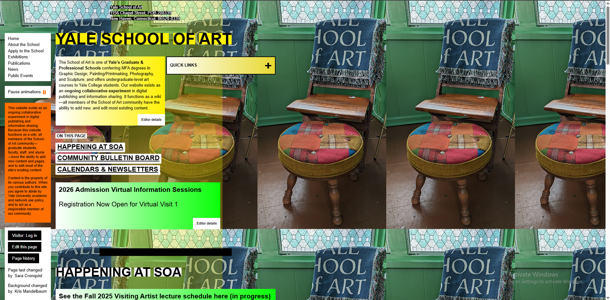

Screenshot: “The Ugliest UI”
Replace public/images/ugliest-ui.png with your screenshot file.
If no image is present, this area will show a placeholder box.

Why this UI is bad
- Poor visual hierarchy — everything competes for attention.
- Clashing colors that fail accessibility contrast checks.
- Inconsistent spacing and alignment — looks unprofessional.
- Tiny (or unclear) affordances for important actions (bad UX).
- No responsive behavior — breaks on mobile widths.
What I would do to improve it
- Establish hierarchy: define clear headings, subheadings, and supporting text; use size/weight and whitespace to separate elements.
- Color and contrast: pick a constrained palette (2–3 core colors) and ensure WCAG contrast for text and controls.
- Spacing & layout: use an 8px-based spacing scale and consistent grid/alignment rules. That immediately organizes content visually.
- Typography: choose a legible font stack, consistent sizes for body / headings, and limit line length for readability.
- Affordances & CTA clarity: make primary actions visually distinct (size, color), and ensure clickable controls look clickable.
- Accessibility: add semantic HTML, ARIA where needed, keyboard focus states, and test with a screen reader and color-blind simulations.
- Responsive design: implement breakpoints and ensure the layout adapts for mobile and tablet.
- Progressive enhancements: improve performance (minify assets), lazy-load big images, and keep JS non-blocking.
This site is intended as a demonstration for SCM / CI/CD: it contains a linter step (ESLint) in CI that will block deployment until JS quality issues are fixed.